来源：https://y3my0b87ql.feishu.cn/docx/Jq9Gd5eJ9oh7ojx61zFc8taPnqh
前几天，看到生财群里，看到发的信息：程序员的习惯就是做出来就放着了。
都说这个洞察好NB， 不过事实大部分都是这样的 ，我也不例外～
建站之后，就搁置了， 上站就完事，如何开始运营优化喃？不知道，也不继续了，慢慢的就淡化了，麻木了。
我就根据我自己的情况， 大胆的猜测有 2 个原因吧，第一个，在工作中养成了这样的惯性，基本上都是一个螺丝一个空，一个萝卜一个坑，各司其职，完成自己的事情就完了。
大公司每个团队有前端，后端，产品，测试，运营；一个团队人才特别全面。但是很少有人会拉通，从上帝视角来鸟瞰这个项目。
还有一个，也是关键的原因。就是没有正反馈，很难坚持下去，也不知道这条路通不通～，慢慢的淡化了。
我之前是这样的，github 找一个模板，当天就上线，开始我还网站做外链，和内容推广，搞了半个月，发现 DR（域名评分才 10 来分），流量小，我都怀疑自己， 是不是除了我，就没人用了呀。
还安慰自己说： 发现"走不通"，还好放弃的早, 我乃明智之举。
都是屁话，为啥人家可以拿到几十 M 的流量，路是没有问题的，就是方法，重点没有搞得对～
刚好，我最近有一些自己的经验分享给大家，抛个砖～～
这不是马上海航来了么？ 你报名了么？要不跟着一起来上站呀～
大概围绕网站的几个方向，网站的功能，seo 外链和内容。Let's go～
根据用户的故事，快速实现交付的 MVP 核心理念，这里不对这个展开说的，
其实航海里面的，有很多这样的模板，直接找一个，然后结合 AI，估计 1 天就能发布， 再不济可以去闲鱼，淘宝找一个 AI 网站的脚手架，快得很。
MVP功能开发出来之后， 100%肯定需要迭代后优化的。
从哪些方面来开始优化，我个人的建议落地页 landing 和 功能页面，为啥用户要付费用的产品，进来之后，直接就用没有门槛是最好的。
落地页是数字营销中的关键环节，专为承接流量并引导用户转化而设计。它通常与广告内容高度相关，通过优化内容和布局，减少用户分心，集中注意力于核心目标。
我们大部分人做的网站， 一个网站前期功能单一，基本上主页就是落地页。 没有目录，没有域名。
就是换脸，就是生成图片，要么申生成视频，都是比较单一的。后期在根据迭代即可。
这个可以根据aitdk 这个免费的谷歌插件，title 和 desc，以及 kw ，
特别注意的是关键字密度，就是在落地页，需要网站功能相关的关键字，需要占比 5%+ 以上，个人经验，我看有点甚至高到 12%。总共单词量在 1500 左右。
heading 的设置，H1～H3 这些，H1 里面需要包含更多的和网站功能相关的关键字。
aitdk 这个插件可以直接对用户这些 kw， desc， title，还有 faq 都可以 AI自动生成完成， 基本上早期就可以直接用了。
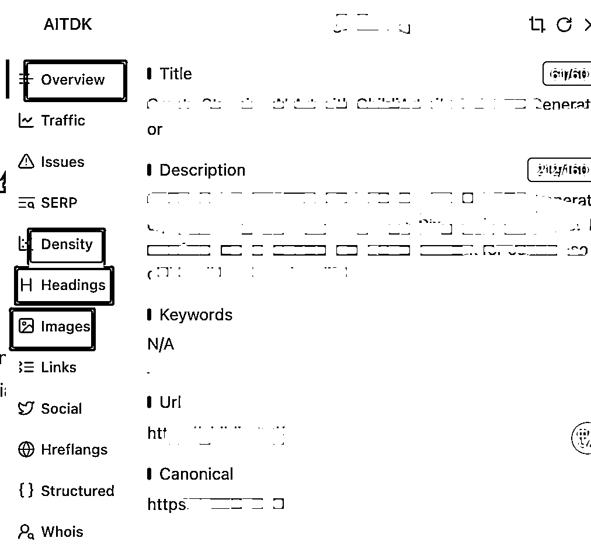
这个提高用户的体验，怎么简单怎么来，让用户买单。
我有几个思路：
从 google 里面搜出来，看看关键字排名第一的怎么做的， 直接抄。（反正我前期就是这么做的，不要脸），千万不要自嗨，认为用户喜欢这样的
比如最近听播客 seo 优化，https://www.xiaoyuzhoufm.com/episode/6818b16047ebeede7ede50f7
这篇播客断断续续的，我听了 3 次+，每次都有新收获。
比如其中一个细节，用户登录前，会展示一个 feature， faq， examples， 等等，登录之后，就变成沉浸式体验。这个我觉得棒棒哒。 那是不是登录用户和付费用户，又是不同的体验？，功能和体验优化细节挺多的。
前面 2 个就有的做了～
其实，收集反馈，不用单独开发功能，我就创建一个 google excel 来收集用户反馈的，然后嵌入 iframe 就可以 了。
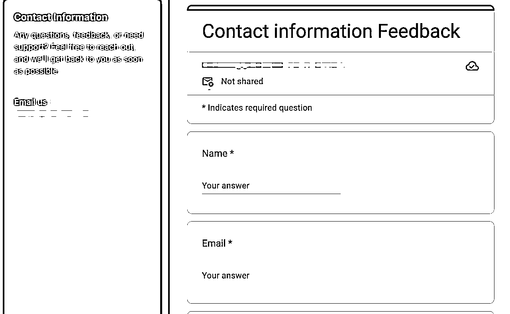
如何管理：创建号一个 excel， 这样每天就可以按照自己的心中的优先级，按照步骤计划执行起来。
最好的效果，就是制定计划，每天一点一点的推进。
我最开始就用微信的笔记记录的，打开也快，看到了就直接修复。
每天就完成一个进度，在没有收到外部用户的反馈之前，自己先给就来一波反馈，这样可以自己推着自己往前走。
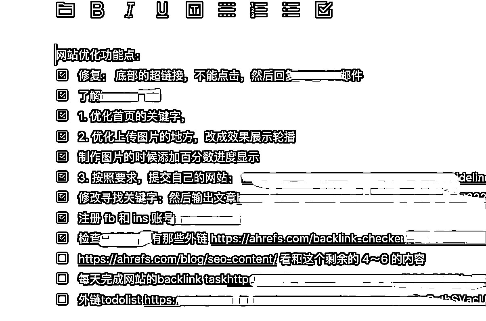
除了落地页，还有性能的优化，google 会对性能好的网站进行提高排名。
下面是 google 网站的网址。
https://pagespeed.web.dev/analysis
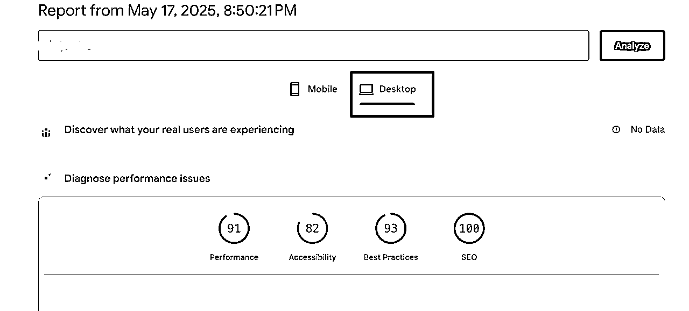
对于大部分 web 网站，肯定是首先还是优化web pc， 手机端的可以放一放，后面需要在加入进来。
上面我的网站优化后的效果，第一个 performance 的值要达到 80 以上吧。
这个页面的下方会有很多的优化细节提示，按照提示修改即可。不懂的直接丢给 AI 也行。cursor 是直接截图的，放过去，然后和对应的代码一起，喊 AI 优化下。效果和速度刚刚的。
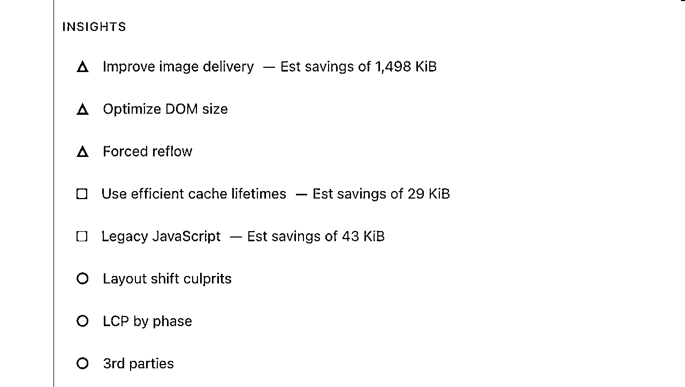
除了功能google 性能优化之外，还有很多这样的网站，我推荐 ahrefs 的 site-audit。
https://app.ahrefs.com/site-audit/
这个功能是免费的， 用起来就是了，打开之后 输入自己的域名，右上角的 new crawl ,开始爬取自己的网站。
过一会儿就可以看到一些诊断信息了， 下面打开链接之后，就可以看到结果了。
优化的结果大概是我任务是 80% 以上就可以了。
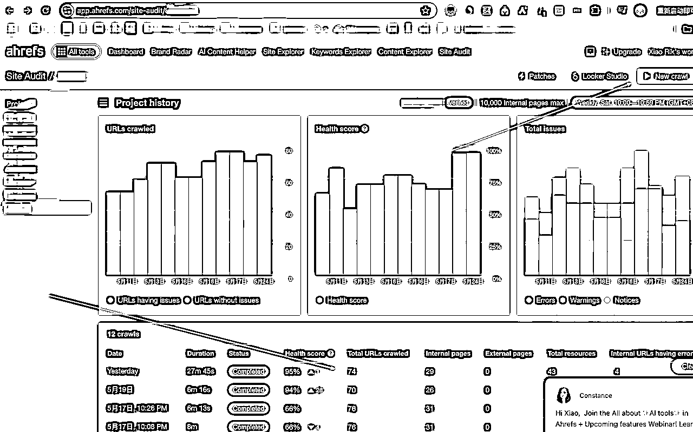
点开之后，top issue里面，按照优先级修复就可以了，目标就是干掉红色即可。 下面这个截图是早些时候的，到目前没有任何红色的 issue 了。
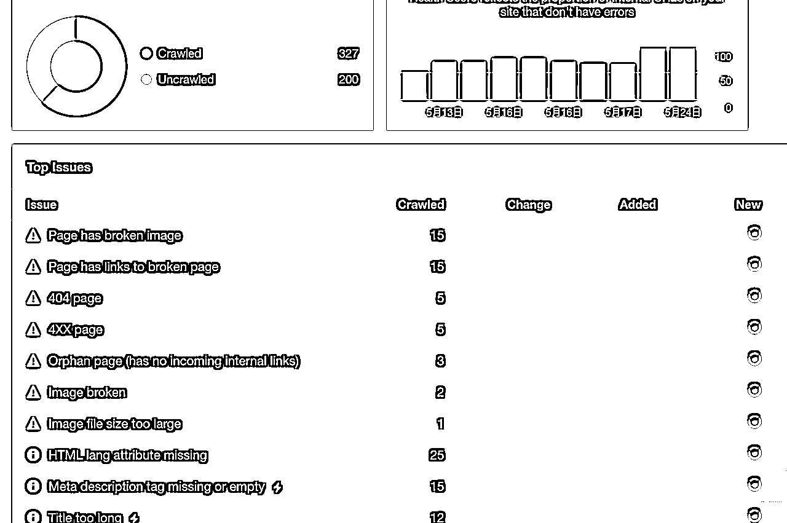
近期的结果。
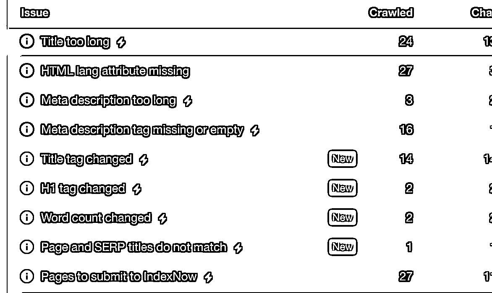
除了功能之外，体验之后，重点就是 seo 的部分， 有外链和内容。
网上这样的文章不要太多，如果有一个点没有看懂的， 直接 ima 搜索就行， 或者联网的 AI 搜索就行，分分钟的事情。
我直接用一个举例子来开搞吧·
对于 ahrefs， 因为我是免费用户， 所以用的都是免费的功能，可以去 x 宝买点账号，一个月的那种号，100+来块。
可以通过免费的账号，或者一个网站一个的外链，大概可用的 20～40 个吧
多个网站，除去重合部分，多查询几个网站，就有 几百个来个外链了吧。
每天增加 10 个， 那就是 几十 天才能完成了。
免费的用完了， 买一个付费的， 根据条件过滤后，找到一个优质的外链，又可以开始去工作了～
免费域名：https://ahrefs.com/backlink-checker
访问Ahrefs免费外链检查工具，输入竞争对手域名，可查看其部分外链数据（免费版显示前几十条）。通过筛选高权威（DR值高）、相关性强的外链来源，手动记录目标网站。
左边第一列DR， 知道 DR 是什么吧？
域名评分，越大越好。
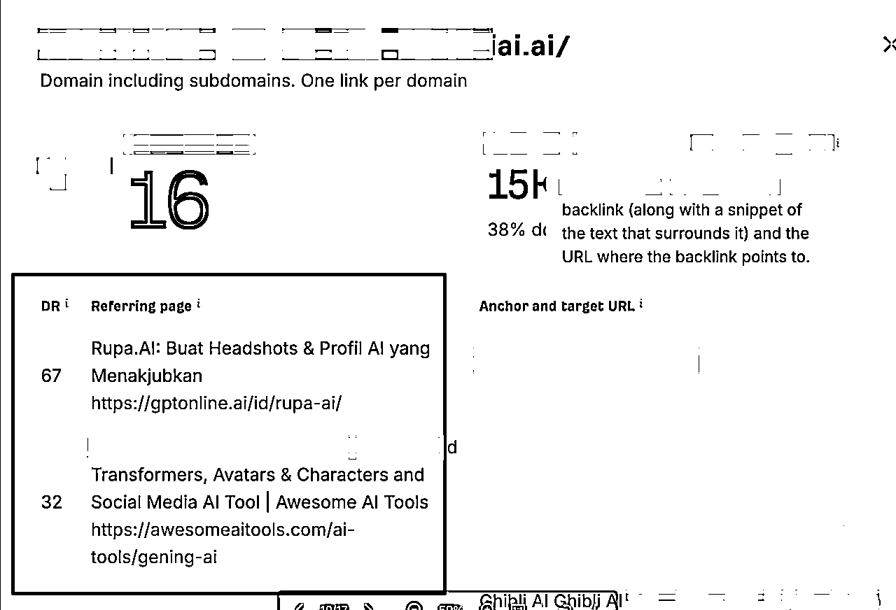
上面是通过 ahrefs 的免费方式可以获取的的，强大的 ahrefs 里面还有其他付费的功能，查找友商的外链，
还有一个技巧技巧就是用 google 的搜索指令，应该大部分都看到吧。这里要打开一个无痕模式，避免有其他干扰～
inurl:resources OR inurl:links OR inurl:tools + 关键字
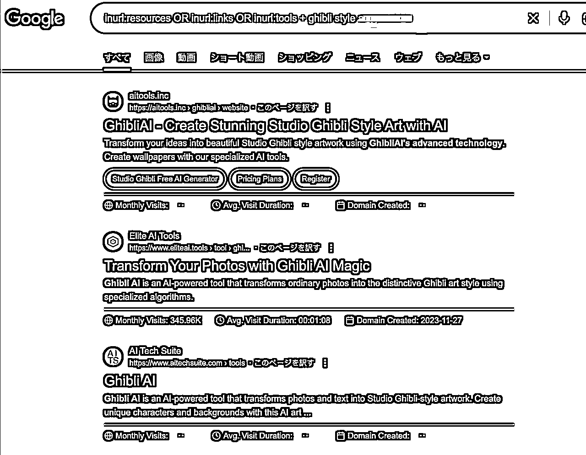
找到之后，就开始搞吧
选中之后，导出到 Excel， 按照从大到小排序，然后就可以看到 DR 较大的在上面了。
筛选高权重（DR≥30）、相关性强的外链来源（如行业博客、资源聚合页） ，什么电报的这种就不管了。
对于新人来说，不要急于的投钱， 减少开支就是增加收入了。
慢慢找有一些免费的，可以提交自己域名的，然后提交上去。
做好文档管理和跟踪，这个有啥用？ 正反馈呀，还有就是下一个类似的项目还可以直接复用的。
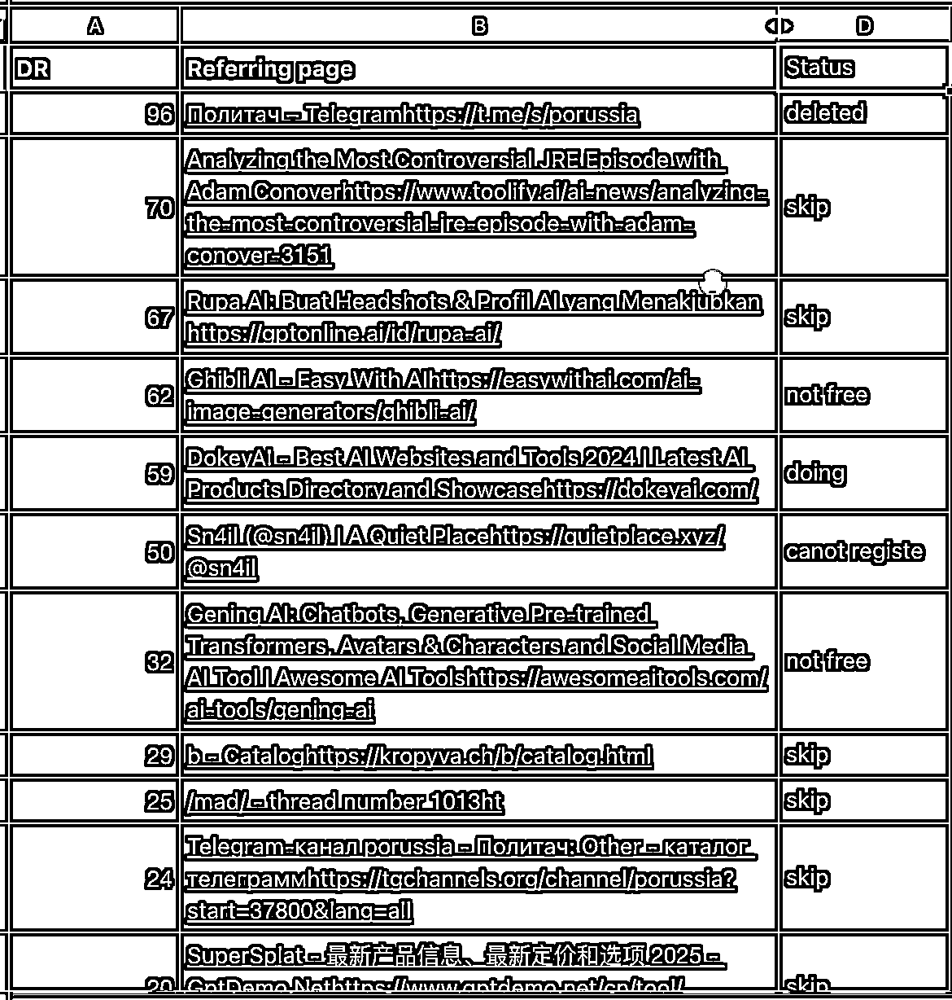
这里有些外链有问题，比如第一个就有问题， 还可以通过高级ahrefs 用户看到那些是 404 的外链，还是那句话可以x宝“ahrefs 一个月”，100 左右的。
上面有一些是文章的，这样也没有机会发布自己的网站的连接，那问题来了？
那有没有可能添加自己网站到comment，来增加自己的外链？ 答案对SEO排名提升作用有限。
我当时就走了弯路，吭哧吭哧的搞了半天， 过了好几天都没有增加， 后来一搜才发现，不行呀～
有两种类型的反向链接：do-follow和no-follow。do-follow链接是一个主动将你作为良好来源或参考的链接，而no-follow链接是一个不会给你带来太多权威性的链接。no-follow链接通常在评论部分或社交媒体帖子中找到，它们没有do-follow链接重要。
“Do follow”链接是一种传统的链接类型，这种链接可以将权重和链接传递给连接到的网站。这意味着当一个网站链接到你的网站时，它会将一些权重和页面排名传递给你的网站。因此，这种链接非常有价值，对于提高搜索引擎排名和流量至关重要。
例子：在文章中植入跳转到你网页的链接，这种就是Do-follow。
文章评论区多数为no-follow链接，评论区的外链通常被标记为no-follow属性，哥哥们，这意味着搜索引擎不会将此类链接的权重传递到你的网站，对SEO排名提升作用有限。
我早期也不知道，累死累死，以为要起飞了， 结果徒劳， 都是泪~
还有其他的比如：对手的404 死外链，替换为自己的外链， 还有付费找其他网站给你写推广～
这些都要付费，我目前还没有开始着手， 我觉得后面可以试试添加这些外链
前期减少开支， 就是开始赚钱了。
目前来说，用免费的就够了。
外链的活，就这么铺开了。
有外链，那有没有内链喃？
确保网站的主要功能，目标页面，能够通过内部链接获得足够的权重。
例如，从网站的首页或者其他高权重页面链接到目标页面，使用相关的 锚文本（包含关键词的文本）。这样可以提高目标页面在搜索引擎眼中的重要性。
锚文本（Anchor Text）是SEO中的一个重要概念，指在超链接中可点击的文字部分。它直接影响搜索引擎对链接目标页面内容的理解，同时也是优化关键词排名的重要因素。
比如这个网站，搜索关键流量来源之后， 可以看到是，主要是某个功能的，那么大部分的链接都需要指向子目录的功能；
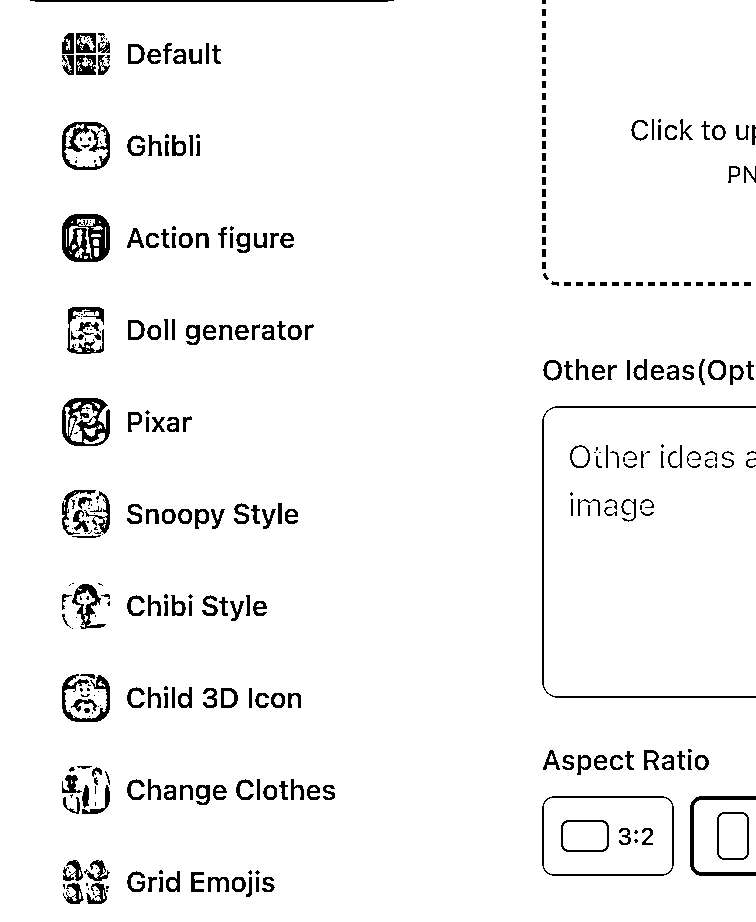
最后的链接到的域名目录就是：/chibi_app
内链比较简单，就这样吧
好了， 链接简单讲完了， 那就接下来是关键字内容了～
先找到关键字，然后用 AI，半人工，半 AI 工具，来快速落地内容的 seo～
通过链接：https://ahrefs.com/traffic-checker/
查看竞品网站的流量来源
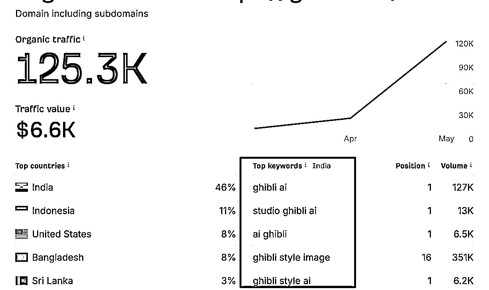
因为我是免费用户，然后把这些关键，和长尾关键字，保持到 excel 里面，
这里可以看到网站的关键字信息有那些：
"ghibli style ai" "photo to ghibli style ai" "ghibli ai generator free" "convert image to ghibli style" "ghibli style ai chatgpt" "chatgpt ghibli style ai generator"
长尾关键字：
"ghibli style ai prompt" "naruto ghibli style ai" "leonardo ai ghibli style" "what is ghibli style" "studio ghibli logo meaning" "is it ghibli or ghibli" "studio ghibli ranking" "ai ghibli" "ghibli ai art" "studio ghibli style ai" "studio ghibli style ai prompt" "ghibli style airbnb" "ghibli-style" "ghibli style animation" "ghibli art style ai" "what is ghibli art" "studio ghibli hayao miyazaki quotes" "studio ghibli full list"
每个地区的关键字难度是不是不一样的，这里用印度和美国举例
https://ahrefs.com/keyword-difficulty
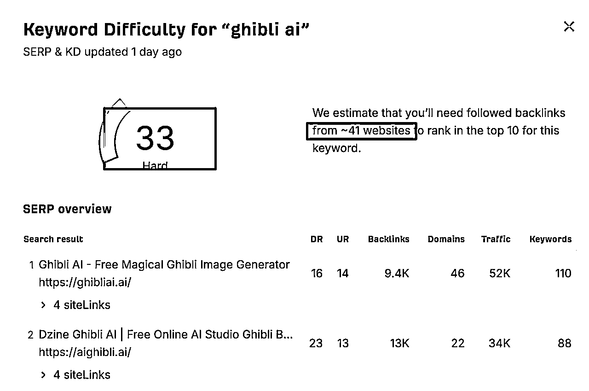
？顺便说下这个图片这些值是什么意思 ？直接通过 AI 也找到， 我直接贴下结果，为什么要讲这个， 下面可能会用到这些值，可以了解下。
UR (网页评级)：URL指数，是指一个网站他的页面的链接指数有多强，记住这个指标的评分数越高，代表它在Google上的排名越高。
DR (域名评级)：是指整个站点的强弱。这个指标越强，代表这个网站的权重越高，或者说这个网站的综合指数就很强。 注意：UR和DR的评分数值在1~100。
Backlinks(外链数量)：所有指向你要查询的网站的外链数量的总和。
Domain (Referring domain相关网站)：这个和backlinks有所区别, backlink是指所有的外链数量，而referring是统计相关的网站。 比如这里网站有9.4k条外链，但是这些外链全都来自46个网站，那它的Referring domain就是46。
关键字难度 33，比较低了，只需要 大约 41 个外链就可以进入 TOP10，
印度的虽然人口多，但是付费的力度也不大，再来看看美国的。难度也小了不少，36 个就可以了，但是流量很少了很多。
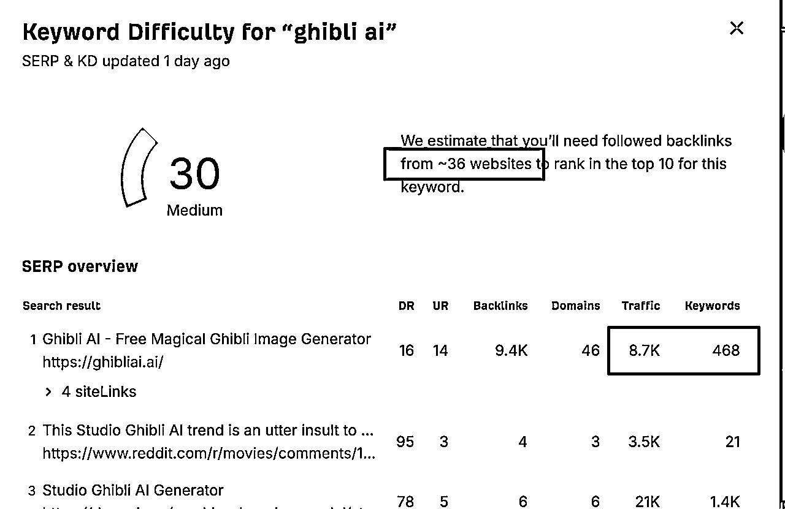
这里估计你和我一样，估计有个问题：
问题 1: 通过 ahrefs 查询到美国地区的关键字ghibli art ai 难度是 33, 这个地区的网站的外链36 website,这 36 个 website 需要归属地是美国么，还是全球的总数量？
我通过 AI 和相关资料发现：，总结一下答案。Ahrefs的“外链数量”通常指全球范围内所有指向目标网站的外链总数，可以通过筛选功能（如国家、语言等）限定统计范围。如果哦你已选择“美国地区”作为关键词分析的限定条件，Ahrefs会优先展示与美国相关的外链来源。
除了相关的找到网站关键字和关键字难度外， 还可以扩展其他联想关键字，变体的关键字
https://ahrefs.com/zh/keyword-generator/
可以找到匹配的关键字的其他相关关键字，然后再来查询其 KD难
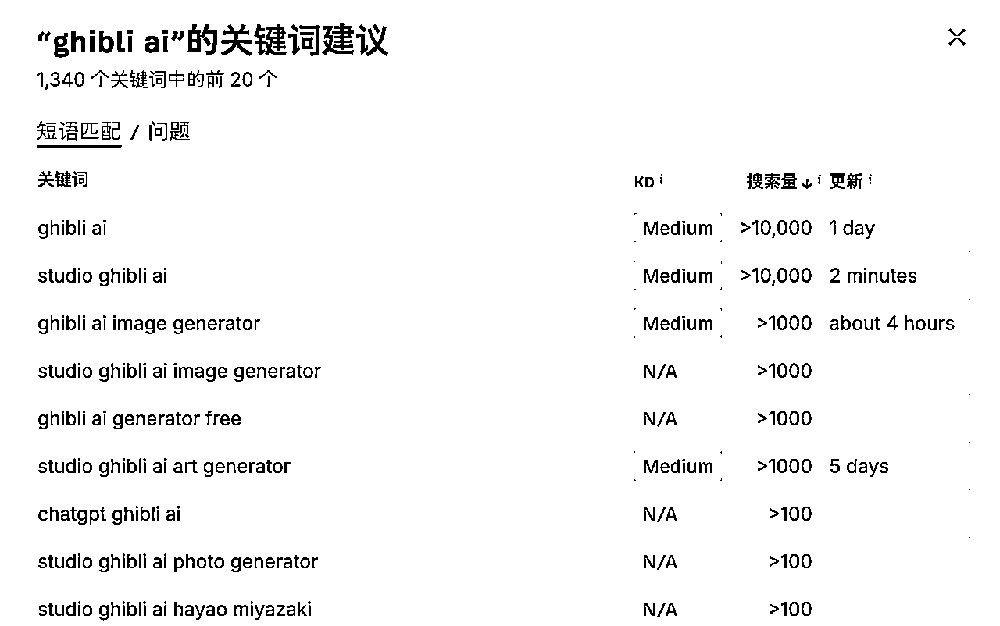
以及对于的问题搜索。属于长尾关键字
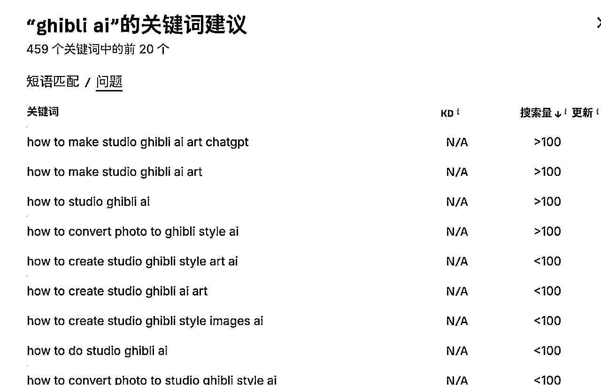
将关键词潜力转化为实际流量。分析搜索意图与内容优化， 可以从精彩片段上分析，直接给出特定查询的完整或部分答案～
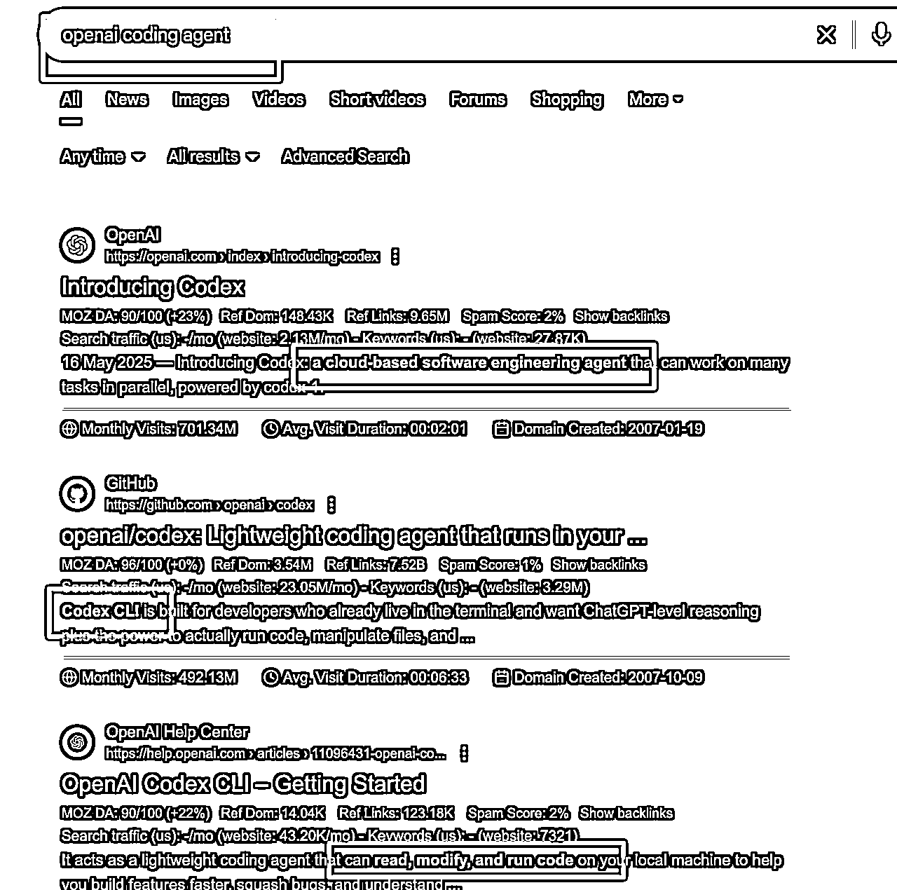
比如我搜索“openai coding agent” 出现的这些黑色加粗的字体，就是重要的关键字信息，可以放到blog 的文章里面。
技术优化，检查目标页面的技术问题，如页面加载速度、移动友好性、代码优化等。使用 Ahrefs 的网站分析工具可以发现一些潜在的技术问题。比如，如果页面加载速度较慢，可以通过优化图片大小、使用CF 的免费 cdn 技术，香的很～
对于内容，我个人的策略是
流量Top1～3+中低难度（KD 20-40），
中流量Top4～6 +极低难度（KD≤20）
有了关键字，和策略了，就开始搞内容呀～
这个内容，就可以用到上面提到的， 优化前面自动的生成的 title， desc， keyword， faq，featrue， heading 等
，就是落地页的描述优化修改～
还有就是blog 文章内容，怎么搞？
这不是有 AI 加持么，直接用 AI 生成文章内容，速度也快，但是也不要生成太多了内容了。
我是 1～2 天一篇的速度，不然可能会被判违规的。
为什么这么少？我是这么理解的，对于blog 内容，AIGC 的普及，基本上大家都可以这么搞，google 是知道的，只能优先把流量给一些 DR高的域名了，有效果，但是不明显；对于新玩家来说，也是一个路径了。
不要急，欲速则不达～
blog文章提示词的话：每个项目不太一样，多调试提示词，思路是，
今天的砖就抛到这里吧，欢迎大家多交流，一起赚美元 ～
灵魂拷问，今天你优化了么？